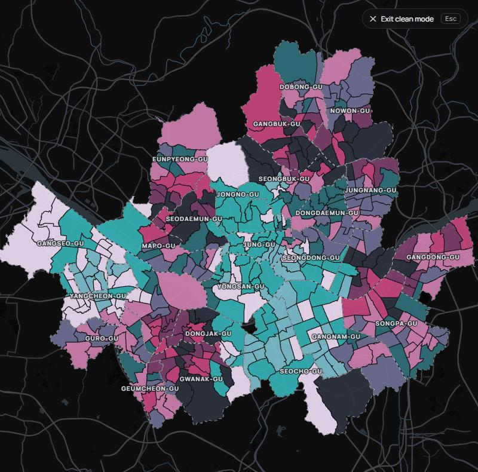
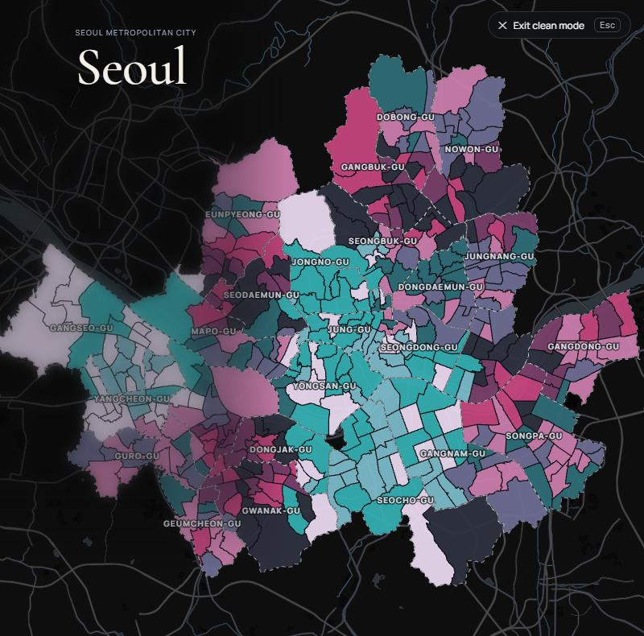
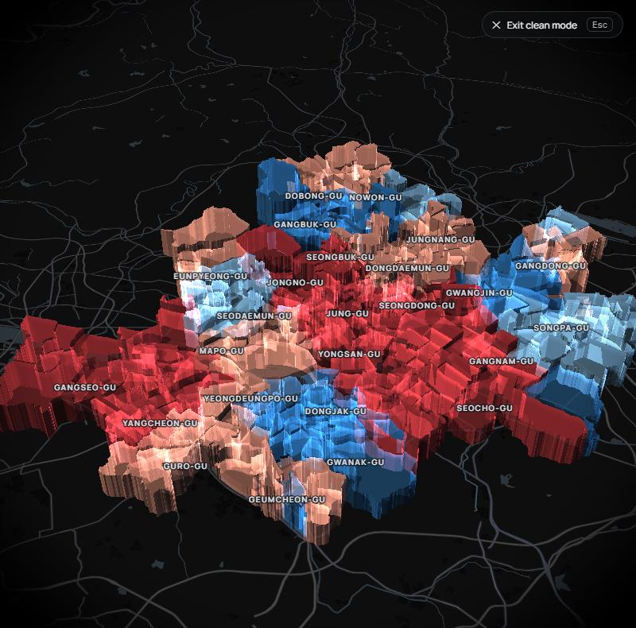

Clean mode — 목업
아직 적용하지 않았어요. 예전 아틀라스의 "Clean mode — 모든 패널을 숨기고 지도만"을 다시 만드는 거예요.
그림은 실제 앱에서 패널을 숨겨 찍은 것이고, 오른쪽 위의 ✕ Exit clean mode · Esc 버튼으로(또는 Esc 키로) 돌아와요. 1과 2에서 하나씩 골라 주세요.
1Clean mode에서 무엇을 남길지
지도 위 구·동 이름과 점선 경계는 지도의 일부라 셋 다 남아요. 지도를 끌고, 확대하고, 3D로 기울이는 건 그대로 돼요.



2켜는 버튼
오른쪽 위 도구 버튼(제자리 · 3D · 전체 화면) 쪽에 둬요. 주황 테두리가 새로 생기는 버튼이에요.
2-가 · 버튼 하나 더
Clean mode와 브라우저 전체 화면이 따로따로. 둘 다 켜면 화면 전체가 지도만.
2-나 · 전체 화면과 합치기
⛶ 자리에 하나만. 누르면 브라우저 전체 화면 + 패널 숨김이 한 번에, Esc 한 번으로 둘 다 풀려요. 발표·시연용으로 간단.